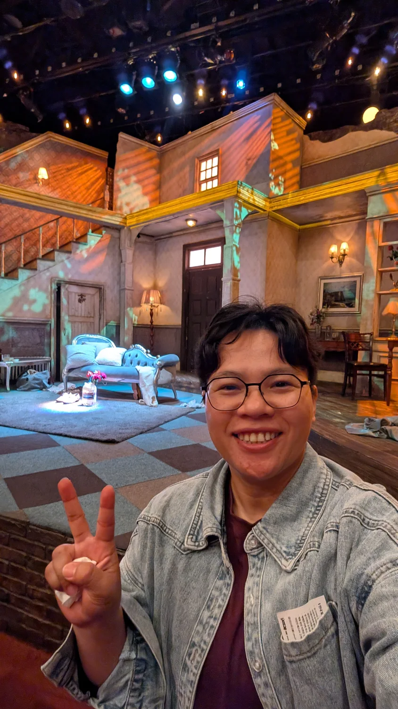
2026 年 5 月 20 日，首爾。時間為韓國當地時間；點照片可以放大。
09:35–10:46
下午要看戲，早上先去逛逛
第二天要去看文瑾瑩了！這次來韓國就是為了她，不過看戲在下午，早上還有時間，先去景福宮附近走走。
出門的時候在下雨。我從誠信女大入口站搭地鐵，中間轉車，再到景福宮站。從站裡走出來，穿過長長的通道，就開始今天的散步了。

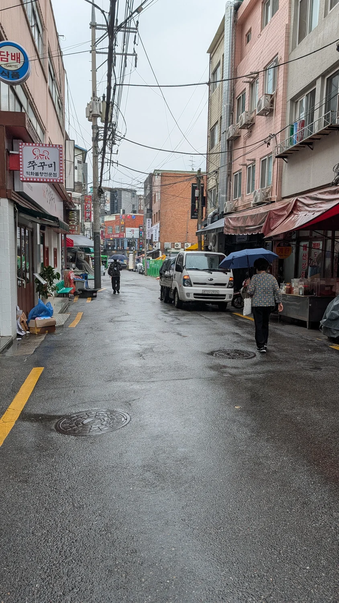

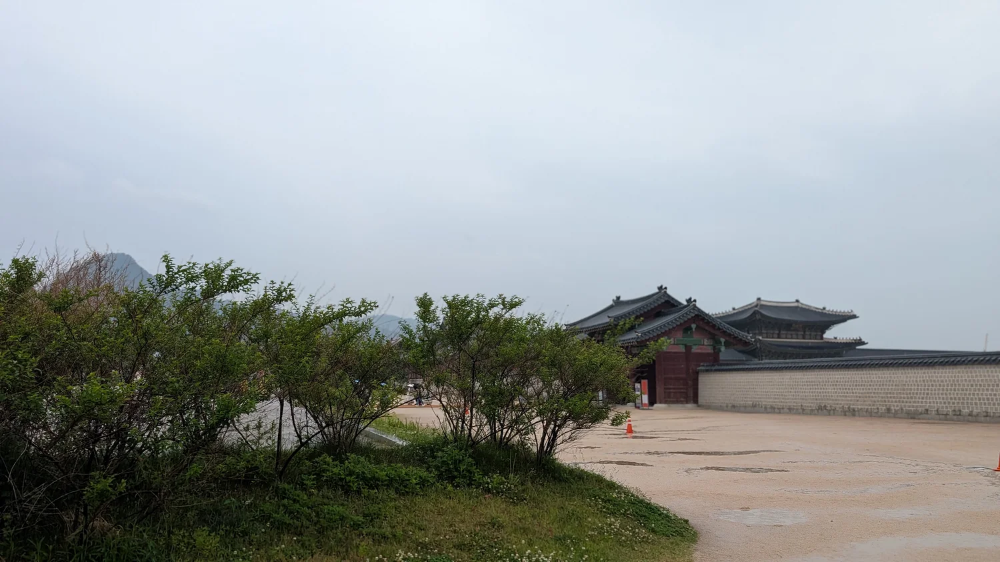
這個上午我在宮門、廣場和外圍的石牆附近走，走到旁邊又是樹和小路。沒有只在門口拍一張就離開，沿著牆繞了一段，後來還繼續走進附近的巷子。
光是在這一帶就拍了好多張。有些根本是同一個地方，換個角度又拍一次，自拍也連拍了好幾張 XD。整理照片才發現，原來還沒去看戲之前，就已經留下這麼多了。

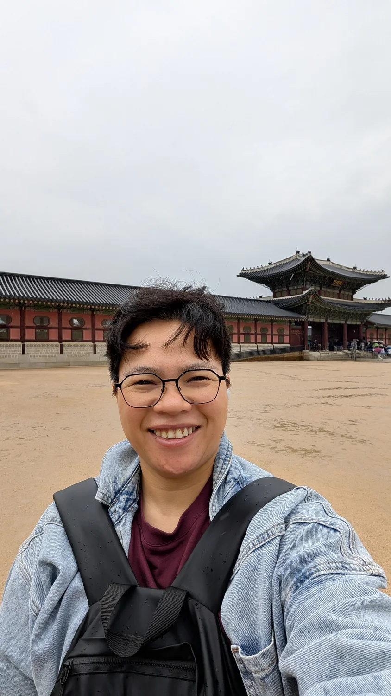

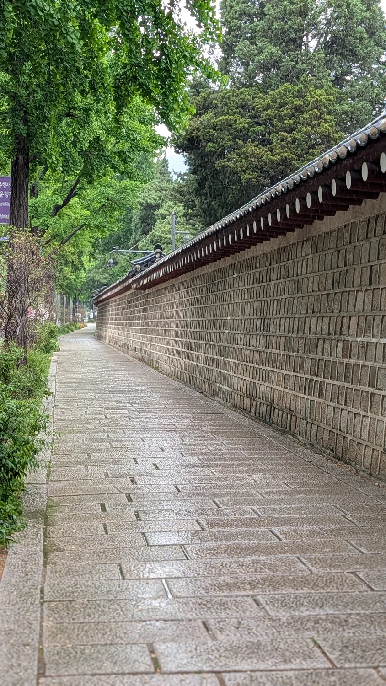
10:50–11:20
逛一逛，喝杯咖啡
從宮牆附近走過來，接著逛的是小巷子。這一帶有老房子、小店，也有窄窄的路，走進去之後，又跟剛才在廣場的感覺不太一樣。
我就沿著巷子走，經過小院子、店門口，再繼續往前。上午這一段主要是在外面散步，後來才進咖啡店坐下來。

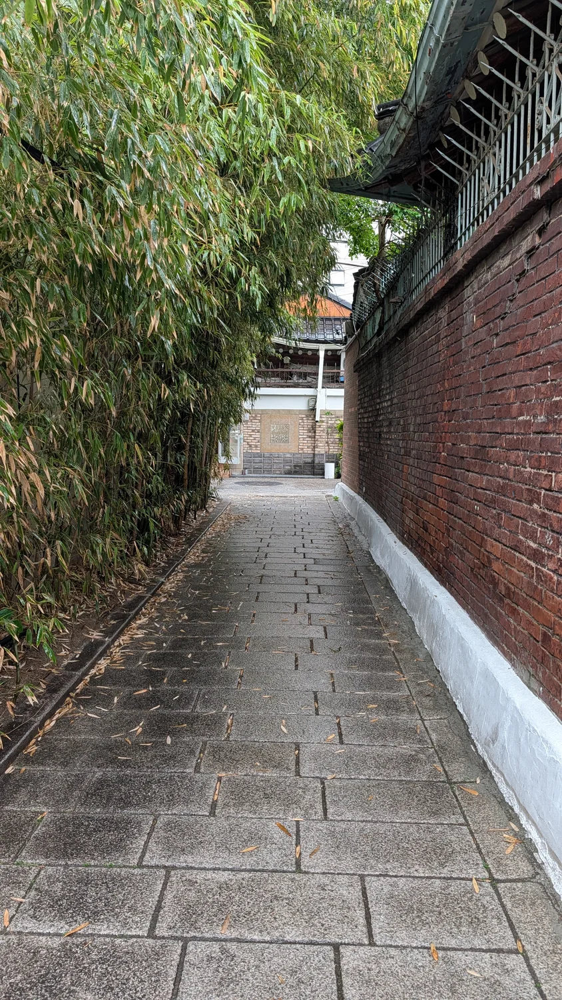

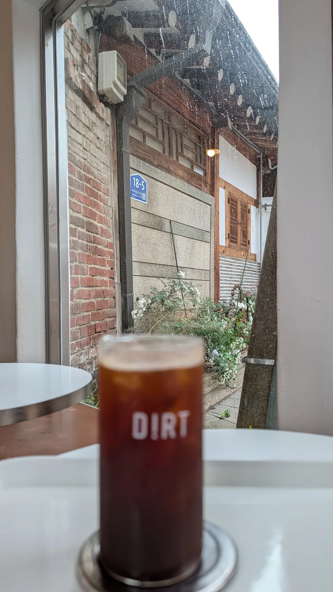
點了杯咖啡，位子就在窗邊。剛剛在外面經過的屋瓦和磚牆，坐下來之後，從窗戶還看得到。咖啡放在窗前，我也忍不住換幾個角度拍。這杯咖啡都有好幾張照片 XD。
在這裡喝杯咖啡，讓走了一早上的腳休息一下。等一下要去的通仁市場，是我自己查到、想體驗銅錢便當的地方，午餐就留到那裡吃。

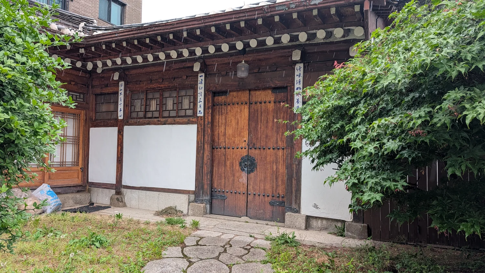

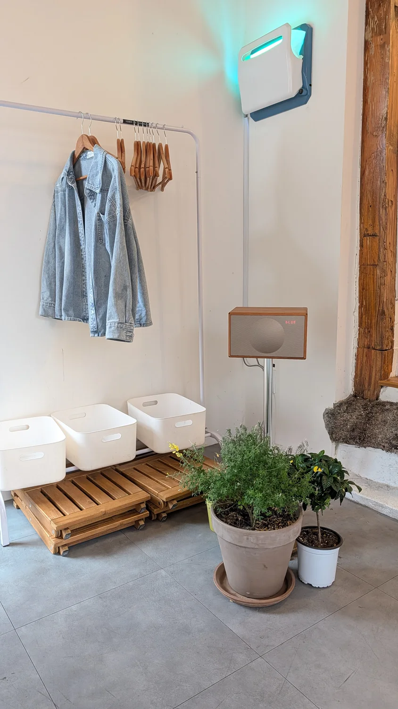
12:08–13:25
自己查到的銅錢便當，來體驗看看
中午去通仁市場。這個地方是我自己查到的，看到這裡可以拿銅錢買吃的、配成自己的便當，就覺得這個文化好有趣，想來體驗看看。
平常買東西都是拿現金或刷卡，在這裡要先換一串銅錢，再拿著空餐盤去逛。銅錢是做成韓國舊式錢幣樣子的代幣，到有參加這個活動的店家，就可以拿來換小吃和配菜。
市場從 2012 年就開始做這個便當體驗了。把不同店家的食物放進同一份便當裡，來吃午餐的人也會跟著走進市場，一間一間逛。覺得這個方式滿有意思的，吃飯還可以這樣玩 XD。


我去的時候觀光客很多，裡面也有韓國人，大家都是來體驗銅錢便當的。原來韓國人自己也會特地來玩這個！看到大家拿著餐盤在市場裡挑東西，滿熱鬧的。
我也拿著自己的銅錢跟餐盤，一攤一攤看要吃什麼。想吃的就用銅錢換，這邊挑一樣、那邊再挑一樣，最後湊成自己的午餐。光是拿著那串銅錢去買東西，就跟平常逛市場的感覺很不一樣。
配好之後，再回到用餐的地方坐下來吃。這一餐有得吃，也有得逛，還真的用銅錢買了一次東西。很開心自己有查到這個地方，可以親自來體驗一下 ^^
吃完午餐，就準備搭車去惠化。下午要看文瑾瑩了！

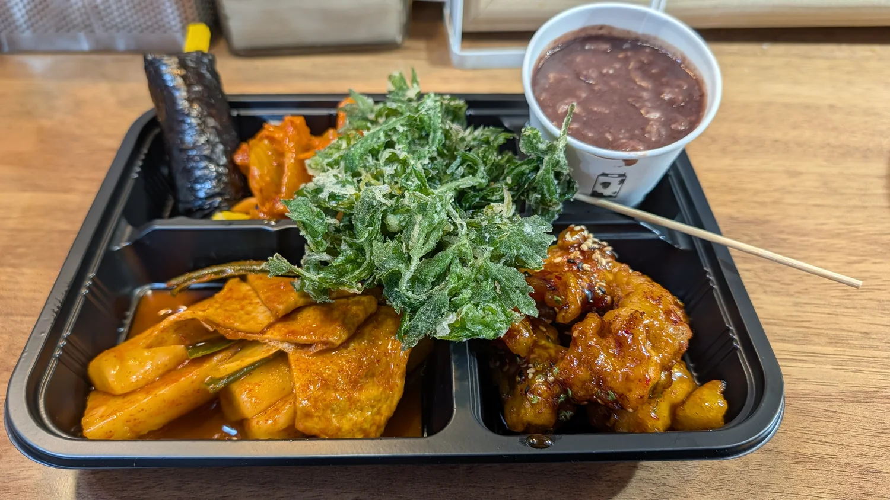
14:02–18:16
終於看到文瑾瑩本人了
下午搭地鐵到惠化，來到 TOM 劇場，看文瑾瑩演的《孤兒》。先看了今天的演員名單，再走進去找位子。我的座位離舞台很近，坐下來，前面就是等一下要演出的地方。
她是我從小就很喜歡的演員，中間有好幾年休影。為了這次演出來到韓國，終於真的坐在劇場裡，等著看她本人了。我真的真的好開心 ^^

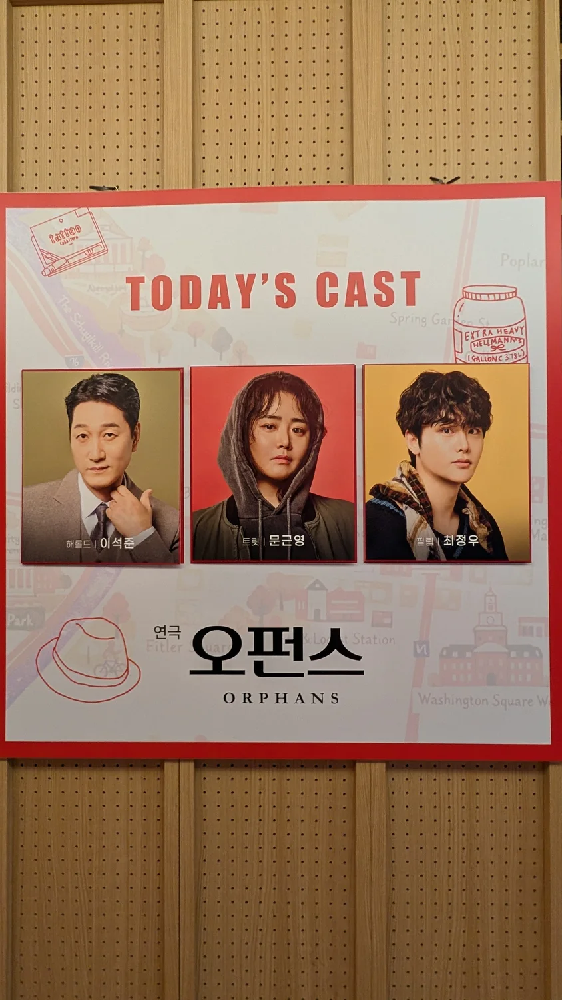

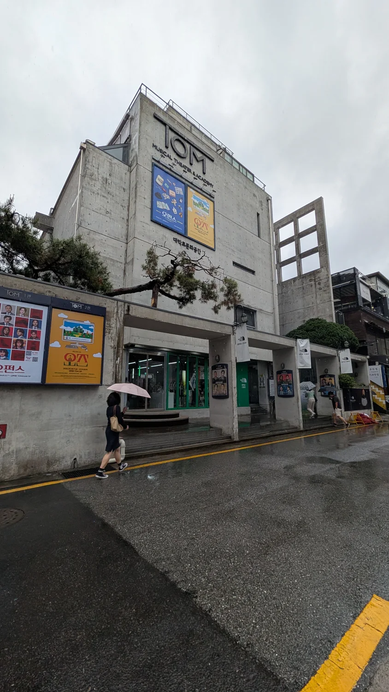
不過我其實聽不懂韓文 XD。有先了解《孤兒》的劇情啦，不是完全沒準備就跑來看。
但真的坐在現場，她的表情、演出時的情感張力，還是讓我當場掉淚。明明聽不懂韓文，卻還是被她感動到了。
事先了解劇情是一回事，真的在現場看她演，又是另一種感受。這次最讓我感動的，就是坐在台下，親眼看著她把角色的情緒演出來。很開心能看到她，也很開心她又回來演戲了。
看完在舞台前拍了幾張自拍，有笑著拍的，也有比耶的。終於看到從小就喜歡的演員，當然要好好留個紀念 ^^

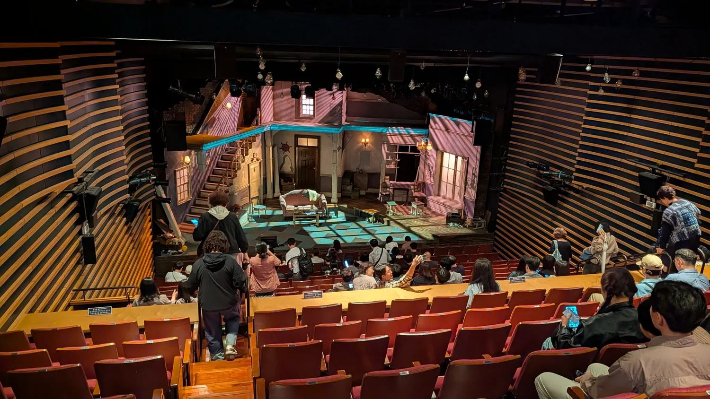

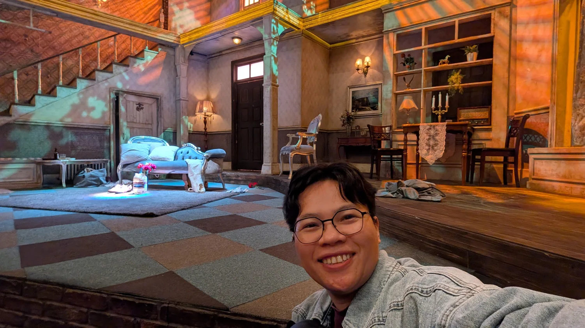
19:01–20:46
一個人吃烤肉，再去吃雪冰
看完戲，晚上想吃韓國烤肉。但這次只有我一個人，要找可以一個人吃的店。後來發現原來有這種一人烤肉店，就來 Hongojib 了。
坐下來，自己的面前就有一個小烤爐。肉、小菜、飯和湯各自放好，我還點了一杯啤酒。一個人也可以這樣坐著烤肉，剛好解決了我想吃烤肉、又只有自己的問題。
等肉上桌，自己放上烤爐慢慢烤，一邊配飯和小菜吃。想吃烤肉，又只有一個人，找到這種店真的滿適合的。以後一個人來，也知道有這個選擇了。

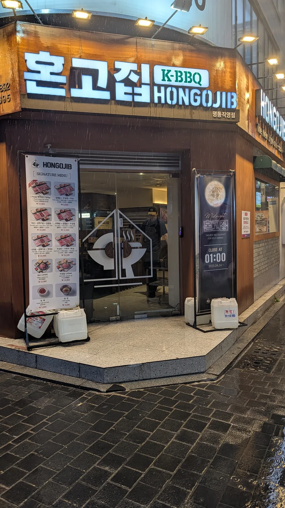

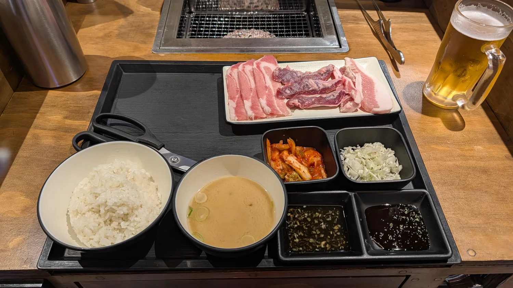
吃完烤肉，還想吃點甜的 XD。接著就去了附近的 Sulbing，坐下來吃一碗雪冰。
今天晚上想吃的還不少，烤肉吃到了，甜點也沒漏掉。吃完雪冰，還有想去走走的地方，先不回去。

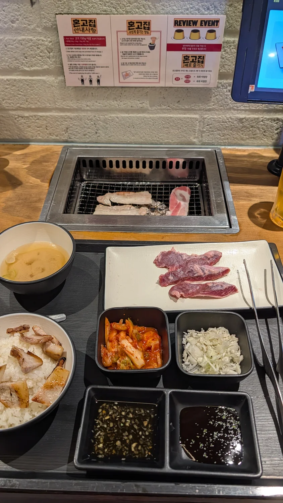

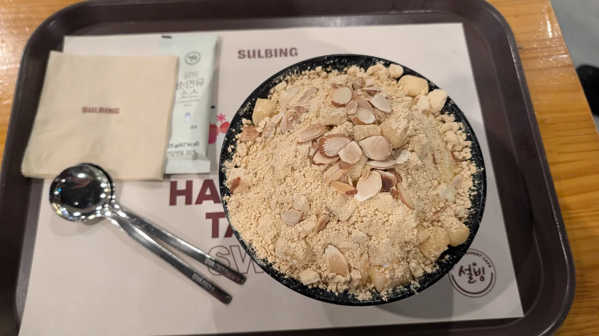
22:33–23:17
為了韓劇來走走，雨中的清溪川真的很美
吃完雪冰，晚上還跑來光化門廣場。我想找的就是《The King：永遠的君主》裡，李敏鎬騎著白馬的那一段！看劇的時候記住了這個地方，來韓國就想親自走走。
這裡有李舜臣將軍的銅像，我在廣場拍了好幾張，直的、橫的都有 XD。劇裡第一集兩個主角就是在光化門廣場相遇的。逛完廣場，再繼續走到清溪川，這晚還沒逛完。


下雨天的清溪川真的很美。路面濕濕的，燈光映在上面，河上又掛著一盞盞彩色燈籠。走到橋邊往下看，跟剛剛站在路上的感覺又不一樣，會想停下來多看一下。
所以雖然已經晚上十點多，我還是在這裡走了一段，也留了自拍，還錄下這段影片。回來看影片，河水和燈光都還在動，比照片更能記住那個晚上的樣子。
不過，鞋子濕掉也是真的。還得想辦法處理，不然明天要穿什麼走路 XD。雨中的夜景很美，濕鞋子的問題也得一起面對。
十一點多才去搭地鐵，第二天就這樣一路逛到了深夜。
後來 5/25 把這段影片 PO 到 IG，我寫了一句話：
城市很喧鬧，但這一刻，心很安靜。
Zero · IG 分享於